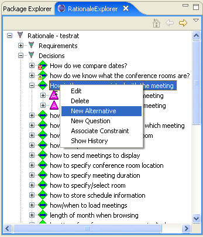
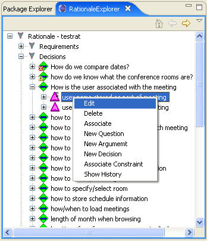
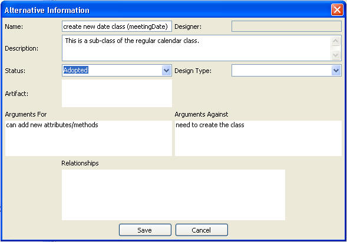

In order to create a new alternative to a decision problem, right-click the name of the decision problem in the RationaleExplorer and choose New Alternative, which will bring up the alternative editor. Or we could edit an existing alternative by right-click the name of an existing alternative and choose edit or by double-clicking the name of the alternative. See the following figures:


The following figure shows the Alternative Editor. This gives the information about the alternative and lists the arguments for it, against it, and that specify relationships. A relationship refers to a dependency on another alternative being selected. The Artifact field will describe what part of the code implements this alternative. In this example, the alternative has not yet been associated with any code.
